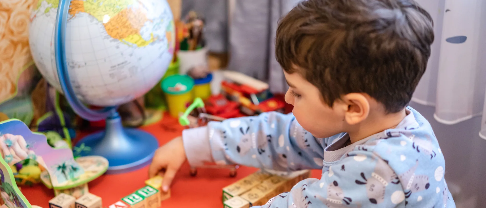

Ideas de juego y aprendizaje para cada etapa, de los primeros meses a los 10 años.
Cada etapa tiene su propio ritmo, sus propios intereses y sus propias formas de aprender jugando. Por eso reunimos aquí todas nuestras guías por edad, para ayudarte a encontrar ideas adaptadas a cada momento del desarrollo de tu hijo.

Doce guías, una para cada etapa, desde los primeros meses hasta los 10 años.